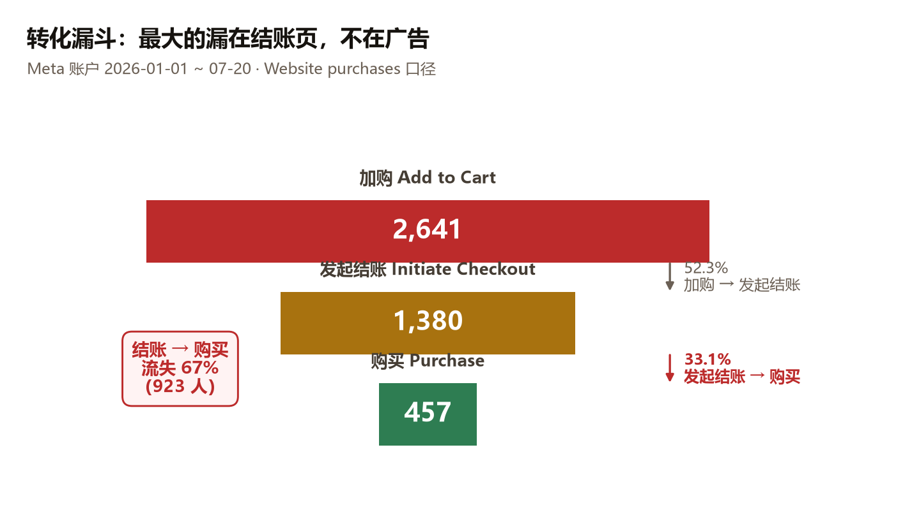
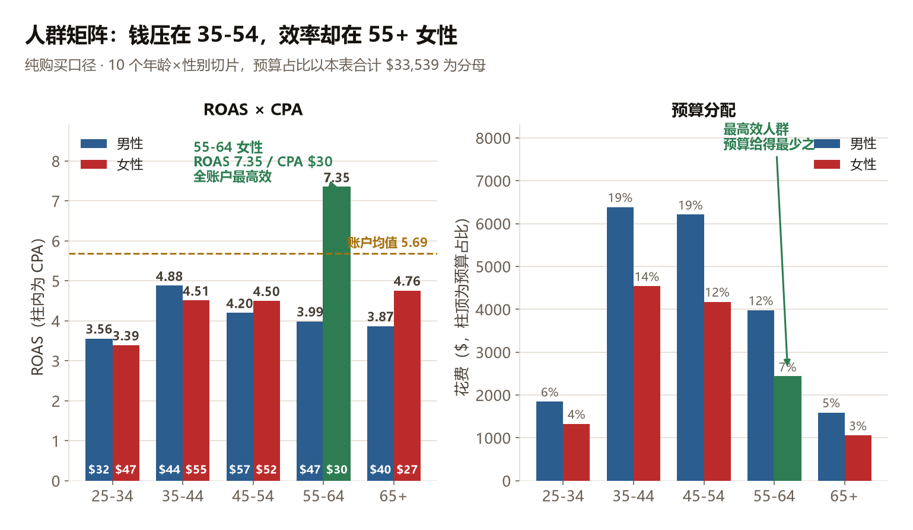
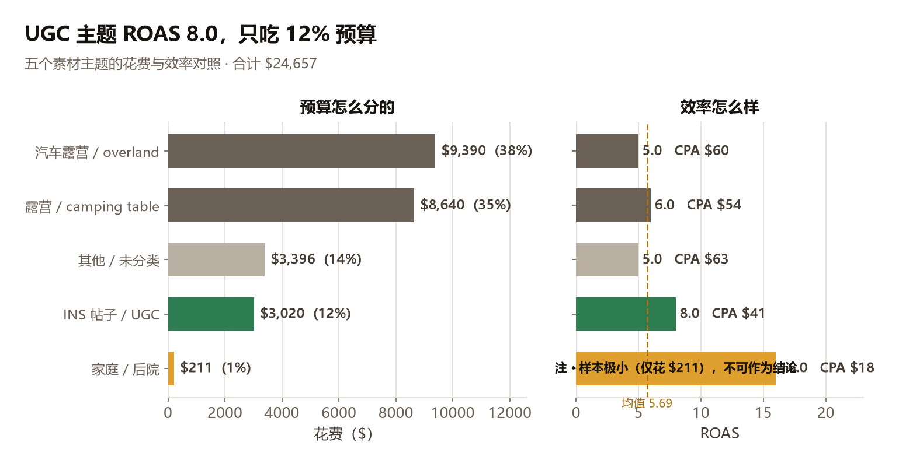
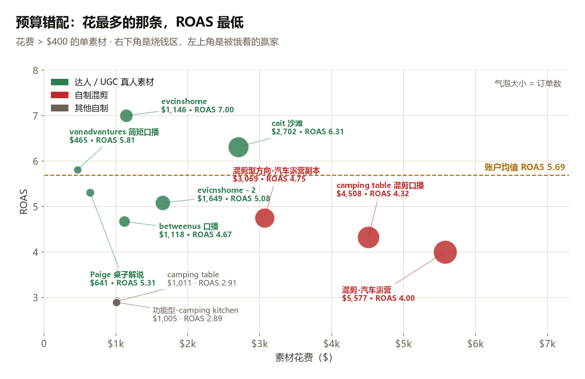

甲方导出的账户数据（1,641 行，含 年龄×性别 拆分），报告周期 2026-01-01 ~ 2026-07-20。
全部数字来自甲方 CSV 实际聚合，未做估算。样本量小的地方已就地标注「不可作为结论，只能作为值得放量测试的信号」。
| 口径 | 花费 | 收入 | 单量 | ROAS | AOV |
|---|---|---|---|---|---|
| Website purchases（有效口径） | $24,657 | $140,198 | 457 | 5.69 | $307 |
| 全量（含无结果行） | $34,024 | $154,506 | — | 4.54 | — |
| 环节 | 数量 | 转化率 |
|---|---|---|
| 加购 | 2,641 | — |
| 发起结账 | 1,380 | 52.3% |
| 购买 | 457 | 33.1%（每 100 个进结账页的人只约 33 个真正付款） |

| 年龄 | 性别 | 花费 | 单量 | ROAS | CPA（单次获取成本） |
|---|---|---|---|---|---|
| 35-44 | male | $6,384 | 145 | 4.88 | $44 |
| 45-54 | male | $6,209 | 108 | 4.20 | $57 |
| 35-44 | female | $4,541 | 82 | 4.51 | $55 |
| 45-54 | female | $4,177 | 80 | 4.50 | $52 |
| 55-64 | male | $3,979 | 85 | 3.99 | $47 |
| 55-64 | female | $2,429 | 82 | 7.35 | $30 |
| 25-34 | male | $1,845 | 57 | 3.56 | $32 |
| 65+ | male | $1,593 | 40 | 3.87 | $40 |
| 25-34 | female | $1,326 | 28 | 3.39 | $47 |
| 65+ | female | $1,056 | 39 | 4.76 | $27 |

35-44 male 单量最高（145 单）、CPA $44；45-54 male 花费第二但 ROAS 只有 4.20。
ROAS 7.35 / CPA $30，预算占比仅 10%。65+ 女性 CPA $27 为全账户最低。
这两个人群对"多一次点击才能买"最不耐受——移动端吸底条无加购按钮这条修复，最直接受益的就是她们。
ROAS 3.4–3.6，年轻人不是买家。这条同时否掉了「年轻硬核 overlanding / 4×4 越野」这个达人方向。
| 主题 | 花费 | 占比 | 单量 | ROAS | CPA |
|---|---|---|---|---|---|
| 汽车露营 / overland | $9,390 | 38% | 156 | 5.0 | $60 |
| 露营 / camping table | $8,640 | 35% | 161 | 6.0 | $54 |
| 其他 / 未分类 | $3,396 | 14% | 54 | 5.0 | $63 |
| INS 帖子 / UGC | $3,020 | 12% | 74 | 8.0 | $41 |
| 家庭 / 后院 | $211 | 1% | 12 | 16.0 | $18 |

| 素材 | 花费 | 单量 | ROAS | CPA |
|---|---|---|---|---|
| evcinshome | $1,146 | 23 | 7.00 | $50 |
| cait 沙滩 | $2,702 | 55 | 6.31 | $49 |
| vanadvantures 简短口播 | $465 | 9 | 5.81 | $52 |
| ins帖子-Paige 桌子解说和展示-2 | $641 | 10 | 5.31 | $64 |
| evicnshome - 2 | $1,649 | 30 | 5.08 | $55 |
| 混剪型方向-汽车露营 - 广告副本 | $3,069 | 51 | 4.75 | $60 |
| betweenus 口播 | $1,118 | 17 | 4.67 | $66 |
| camping table 混剪口播 | $4,508 | 63 | 4.32 | $72 |
| 混剪-汽车露营（花费最高） | $5,577 | 72 | 4.00 | $77 |
| camping table | $1,011 | 11 | 2.91 | $92 |
| 功能型方向-camping kitchen | $1,005 | 9 | 2.89 | $112 |

evcinshome 只花了 $1,146。把红色区的钱搬到绿色区，是这个账户当下确定性最高的一次调整。| 广告组 | 花费 | 占比 | 单量 | ROAS |
|---|---|---|---|---|
| 自定义受众 1%-3% 类似受众 | $8,980 | 26% | 128 | 4.3 |
| 核心兴趣词 | $5,394 | 16% | 87 | 5.2 |
| 30天加购 | $3,471 | 10% | 47 | 4.4 |
| overlanding & bbq/grill | $1,707 | 5% | 22 | 4.3 |
| 测素材-evcinshome-2 | $1,581 | 5% | 30 | 5.3 |
| 兴趣人群-family-camping | $1,467 | 4% | 15 | 3.1 |
| 测素材-cait沙滩-camping | $1,040 | 3% | 30 | 8.8 |
| US-通投-禁火令期间 | $1,227 | 4% | 9 | 2.2 |
| 社媒180天互动+网站60天访问+视频75%观看 | $394 | 1% | 7 | 5.6 |
两组合计 $1,227 / ROAS 2.2。
根因不是投放优化问题，是合规问题。BLM 官方条文把「木柴/炭火盆」定义为 campfire，Stage 1 起即违法——你在向一群刚被官方通知「不许生火」的人卖火。→ 禁火令法条与逐州时间轴
「社媒互动 + 网站访问 + 视频75%」再营销池 ROAS 5.6，但只花了 $394（占 1%）。这是账户里性价比被低估最明显的一组。
而这个方向的证据是全案最交叉的：关键词侧 32 个词 / 21,650 搜索量 / 平均 KD 13.7（八个簇里最软）；趋势侧 foldable korean bbq table +1,300%、foldable kbbq table Breakout、全年无淡季；广告侧 KBBQ Bros 已跑出 159 天长青素材验证赛道能跑；产品侧 甲方已有 KBBQ Style Grill Grate（$37）。
⚠️ 口径修正：账户分析原稿写的「KBBQ 43,300 搜索量」经关键词表重新核算为 21,650（43,300 恰为其两倍，疑为重复计数）。不影响结论方向。
而 fire pit table 96,440 是关键词库里最大的搜索池；广告侧竞品把重兵压在后院（Breeo 87%、KBBQ Bros 80%、Solo Stove 47%），AroundFire 后院只占 27%；地域数据也显示 fire pit table 的高关注度州（PA / DE / NH 东北部有房有院人群）与 portable fire pit（山地西部）是两个完全不同的盘子，应该分开建组。
| 优先级 | 动作 | 依据 |
|---|---|---|
| P0 | 预算从「自制混剪」搬到「达人真人口播」 | UGC 主题 ROAS 8.0 / CPA $41 只吃 12% 预算；花费最高的混剪 $5,577 ROAS 只有 4.00 |
| P0 | 向甲方索取 evcinshome / cait / vanadvantures / Paige / betweenus 五位创作者的联系方式，建立复购 | 这 5 条素材合计花费 $7,021、ROAS 均值 > 5.5，是已被账户验证过的确定性资产；而它们的创作者一个都不在 695 人的达人库和 33 条外联台账里，来源没被记录也就无法复制。→ 达人库诊断 §6.2 |
| P0 | 先修结账页，再加预算 | 结账→购买流失 67%。在这个漏斗结构下加预算，等于按比例放大漏损 |
| P1 | 给再营销池加量 | ROAS 5.6 却只花 $394（1%） |
| P1 | 把 55-64 / 65+ 女性单独建组并加预算 | ROAS 7.35 / CPA $30 与 CPA $27（全账户最低），预算占比仅 10% |
| P1 | 降低 25-34 人群预算 | ROAS 3.4–3.6，全账户最差 |
| P1 | 开 KBBQ 素材组 + 落地页（与网站侧 08 导航重构 同步） | 零素材零广告组，而四条独立证据全部指向这个方向 |
| P1 | 把「家庭/后院」从 $211 放量到可判断的样本量 | 现在只是信号，不是结论。放量测试才能验证 |
| P2 | 6–8 月停投美西木柴款转化广告，改推燃气线 | 「禁火令期间」ROAS 2.2 是合规问题不是优化问题。⚠️ 燃气线主推需先解决关税结构（直发下关税占售价 55.7%） |
| P2 | 东北/中西部打「后院聚会」，山地西部/太平洋西北打「露营越野」，账户结构上分开 | 地域数据显示是两个完全不同的人群盘子 |
| P2 | 补静态图素材 | AroundFire 11 条在投广告 100% 是视频、零静态图；竞品都是图视混投。静态图是低成本抢量和承接促销信息的弹药 |
| P2 | 排查 27% 无归因花费 | $9,187 产生 515 次加购但 0 归因收入。需查像素配置 / 归因窗口 / 广告组设置 |
vanadvantures 是「简短口播」，$465 小预算跑出 5.81；Paige 是「桌子解说和展示」——就是把产品讲清楚；betweenus 是「口播」。chase.in.point（"画面精美，优质航拍，摄影师"）、keegjasper（"视频风格绝美"）、connography_（"电影感创作者"）—— 甲方在按「谁拍得好看」选人，但账户数据说买家买的是「谁讲得清楚」。这是选人标准上的方向性错误。